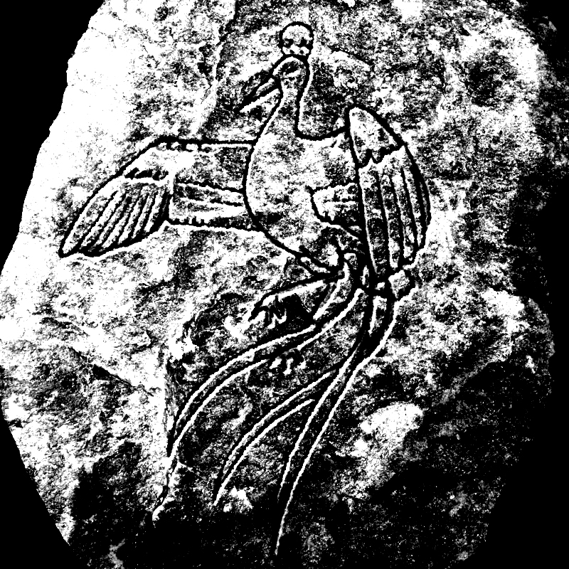

La Palsimauve
La palsimauve est un oiseau de l’ordre des passériformes, aujourd’hui disparu du monde ordinaire et accidentel dans lequel nous vivons.
Il y eut une époque — bien avant que des pluies diluviennes ne tombent sur notre planète durant tant de jours et de jours que l’ensemble des terres se trouva totalement immergé — une époque au cours de laquelle la palsimauve était l’oiseau le plus prisé des cours royales du continent de Perlanie. Ce succès était dû à différentes raisons, dont deux nous semblent suffisamment originales pour être citées dans ce court article.
La première de ces raisons provenait de la richesse des couleurs de son plumage, couvrant une gamme de violets et d’oranges qui habillait la palsimauve d’une véritable robe de feu. En soi, ce plumage unique faisait déjà de ce passereau un oiseau d’exception, et les plus grands peintres l’ont représenté aux côtés des plus illustres monarques, ne serait-ce que pour les attraits de ce ramage splendide et singulier.
La seconde raison — et pour nous de loin la plus importante — du succès de cet oiseau auprès des cours impériales de Perlanie, est qu’il pouvait, selon la nature des graines qu’on lui offrait pour son dîner, dire avec une rare précision l’avenir de celles et de ceux qui le fixaient dans les yeux.
Ainsi, après lui avoir fait avaler des graines de pavot, l’empereur Hasnamnostélor apprit que son palais serait détruit par les rêves de son peuple endormi et oublieux des danses sacrées qu’il n’avait pas pris le soin de lui transmettre. Car, comme lui souffla la palsimauve : « La mémoire du geste l’emporte sur celle de l’esprit, et tu t’es trompé en remettant à demain ce qui aurait dû être dansé aujourd’hui. »
D’autres faits plus heureux sont également relatés dans certaines chroniques, comme celui témoignant d’une palsimauve annonçant à Sītā sa libération à venir par le prince Rāma, après que Rāvana eut fortuitement donné des graines de pissenlit à l’oiseau. Cet épisode de la vie du célèbre couple a cependant été omis du Rāmāyana pour des raisons inconnues.
Quoi qu’il en fût, la palsimauve disparut, exterminée pour son plumage par quelques zélés serviteurs du goût dominant. On en fit des sacs à main, sans se rendre compte qu’on venait de réduire un oracle au silence.
Et c’est pour cette raison qu’il nous faut aujourd’hui, pour connaître notre avenir, aller à la rencontre de nos ombres, plutôt que de simplement nourrir et écouter le chant d’un paisible passereau.
